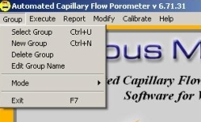

Select the Group menu option.
Choose Select Group to use an existing group.
Choose New Group to create a new group.
For more information on the use of groups see Example: Using Groups.
Choose Select Group to use an existing group.
Choose New Group to create a new group.
For more information on the use of groups see Example: Using Groups.
 From the CAP WIN Main Screen, select the Auto Test
option from the Execute
menu.
From the CAP WIN Main Screen, select the Auto Test
option from the Execute
menu.
Select the Type of Test option at the bottom of the screen.
If the test shown is incorrect, click on Type of Test. The Test Selection screen appears. Select Envelope Surface Area from the yellow list and Show Results at End of test if you would like to have the average surface area, fiber diameter and spherical particle diameter displayed at the end of the test. Click OK.
You are returned to the Auto Test screen.
If the test shown is incorrect, click on Type of Test. The Test Selection screen appears. Select Envelope Surface Area from the yellow list and Show Results at End of test if you would like to have the average surface area, fiber diameter and spherical particle diameter displayed at the end of the test. Click OK.
You are returned to the Auto Test screen.
Select Output File Name.
 If the path and file shown are correct, fill in the End User, Test Reference, Sample ID, Lot_Number, Operator which are the labels of identification for the sample being used.
If the path and file shown are correct, fill in the End User, Test Reference, Sample ID, Lot_Number, Operator which are the labels of identification for the sample being used.
If the file shown is incorrect or to create a new file, click on Output File Name. The Output Data File selector appears. (The file selector appears as shown if CAP WIN was installed with the default path. If you opted for a different path, locate the Capwin folder and select it.) You can either select an existing file or create a new file under a new folder. After hitting OK you will be returned to the Auto Test screen.
If the file shown is incorrect or to create a new file, click on Output File Name. The Output Data File selector appears. (The file selector appears as shown if CAP WIN was installed with the default path. If you opted for a different path, locate the Capwin folder and select it.) You can either select an existing file or create a new file under a new folder. After hitting OK you will be returned to the Auto Test screen.
End User, Test Reference, Sample ID, Lot Number, Operator
and Fluid
are all optional and may be left blank if so desired. These items are printed on the reports for information and identification purposes.
Enter the Mass of the sample, the Diameter of the sample and the Absolute Density. These values are recommended for the results of the measurement.
Enter the Mass of the sample, the Diameter of the sample and the Absolute Density. These values are recommended for the results of the measurement.
Click the Start Test button at the top of the Auto Test screen.
If the data file you have chosen already exists, you will see a screen similar to the one shown at right.
Clicking Yes continues the test and overwrites the existing data in the file with the new test data..
Clicking No returns to the Auto Test screen.
 A message box prompts you to insert the dry sample if the Hide Sample Load Prompts option has not been checked. Insert the sample as described below then click OK to begin the test. (For complete information on installing samples see Installing the Sample.).
A message box prompts you to insert the dry sample if the Hide Sample Load Prompts option has not been checked. Insert the sample as described below then click OK to begin the test. (For complete information on installing samples see Installing the Sample.). Place the sample in the bottom of the sample chamber. Make sure it completely covers the O ring. If it does not, place one of the small-sample adapter plates in the bottom of the chamber, place the sample on the smaller O ring of the adapter, and place the matching adapter plate on top of the sample.
Place the thick spacing insert in the chamber. It should press far enough into the chamber so that the O ring on its side will pass below the upper rim of the chamber, but not so far that the entire insert is below the upper rim. Screw the chamber cap onto the chamber and hand-tighten to the point where the O ring on the top of the spacing insert is compressed against the chamber cap.
Caution: Over-tightening the cap can cause the cap and spacing insert to seize. If this happens, the sample chamber must be replaced. Over-tightening may also damage the sample.
After installing the sample and clicking OK, a Current Test Status screen specific to the type of test appears. A box appears in the center of the screen prompting the user to click OK to start the test.
The test runs until the set maximum pressure or flow rate is reached. A message box informs the user that the sample may be removed.
Click OK to return to the CAP WIN Main Screen.